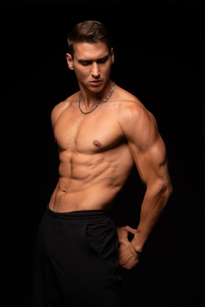
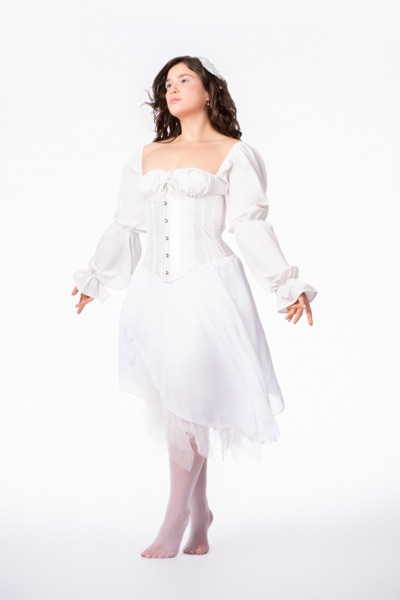

Skip to content
Work
About
Contact

Mind Vs Body
Sit For Who?
Seeing Red
On Hold

Angels
Overworked & Underpaid
Picture Day
Corporate Class
Teachers Pet
No Concept
La Vie En Noir
The Boss
All 15 projects
About
Contact